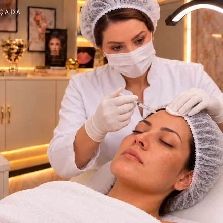
Linhas de expressão
Botox
Suavize as linhas de expressão com um planejamento que respeita seu rosto.
Assistir · 30 segundosEntenda os tratamentos, descubra possibilidades e encontre o cuidado que combina com você.
Explorar cuidadosDo preparo à aplicação: veja como a toxina botulínica atua nas linhas de expressão.
Como funciona o botox? Após avaliar o rosto, a profissional prepara a toxina botulínica com solução salina estéril. Em seguida, separa a quantidade indicada para cada região. A aplicação é feita em pontos selecionados. A toxina reduz temporariamente a contração dos músculos, suavizando linhas de expressão. O efeito aparece gradualmente nos dias seguintes. Na BC, tudo começa com uma avaliação individual.
Explore os grupos e abra as opções para conhecer cada tratamento.

Suavize as linhas de expressão com um planejamento que respeita seu rosto.
Assistir · 30 segundos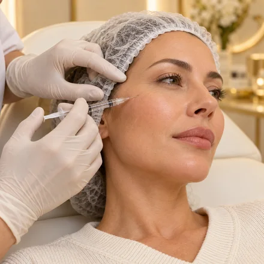
Cuidado com volumes, proporções e contorno, valorizando suas características.
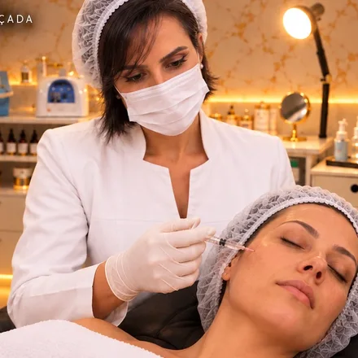
Bioestimuladores e tecnologias selecionados para cuidar da firmeza e da qualidade da pele.
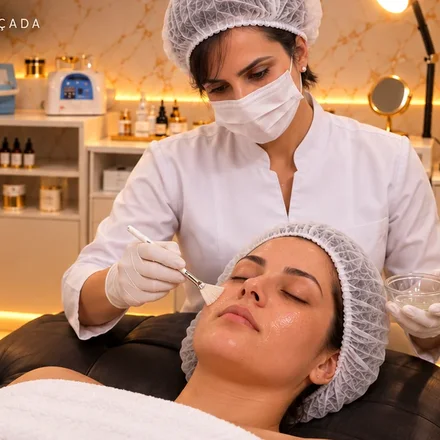
Da limpeza ao cuidado com manchas e textura: encontre o caminho para a sua pele.
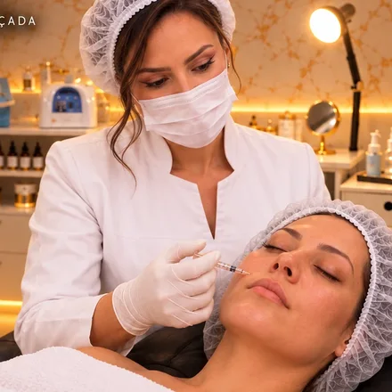
Cuidados para uma pele com mais hidratação, viço e aparência revitalizada.
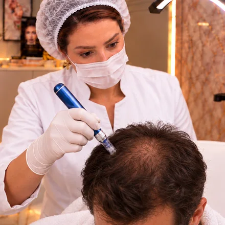
Avaliação dos fios e protocolos personalizados para cabelos e sobrancelhas.
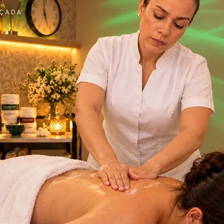
Cuidados para contorno, firmeza, sensação de inchaço e relaxamento.
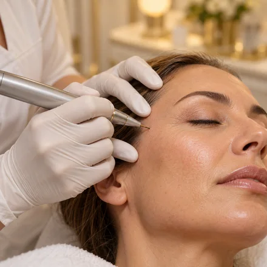
Cuidado direcionado a pequenas áreas, conforme avaliação da pele.
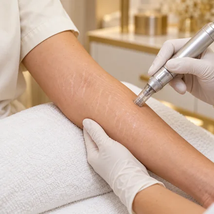
Técnicas escolhidas conforme o tipo e as características das estrias.
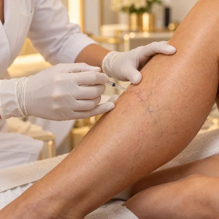
Avaliação e cuidado dos pequenos vasos para melhorar sua aparência.
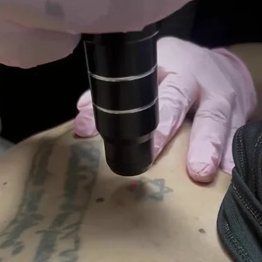
Clareamento progressivo de pigmentos, com indicação e sessões individualizadas.
Os protocolos exclusivos da BC estão nas opções de cada grupo. Técnicas diferentes podem atender a um mesmo objetivo; a escolha depende da avaliação individual.